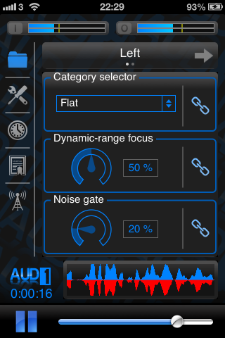
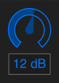

Presets and Tuning (Sound Shaping)
Overview
|  | The preset selection page (shown left) is the first page that the user is greeted with when launching the app. The folder icon in the navigation bar is illuminated when this page is visible, and the user can return to this page at any time by tapping the folder icon. The page consists of 3 main controls (1) the category selector allows the user to select the frequency profile of the amplification (2) the dynamic-range focus control allows the user to adjust how compressed the sound is (3) the noise gate control sets the threshold of the noise reduction preprocessing. |
Notice that the header above the main page initially says “Left”. AUD-1 uses independent audio processors for left and right ears by default (although this setting can be modified as discussed here). Settings can be changed independently for the left and right ears if desired. The settings page for the other ear can be accessed by horizontally swiping left or right in the main content area.
Adjacent to each of the the main controls is a chain-link icon. These are illuminated by default to indicate that any modified settings will affect both ears. The linkage can be enabled or disabled for any of the 3 main settings by tapping the associated chain-link icon. However, it is recommended that users leave the settings linked when exploring initially to get a feel for the way the app reacts to manipulations of the different controls. If you have different levels of hearing loss in each ear, you may find it easier to explore the parameters by wearing only one earpiece at a time in order to tune the values for each ear. After this, the user might like to try wearing both earpieces while fine tuning the settings.
Category Selector
The Category selector allows the user to select the frequency profile of the amplification. The choices include:
- A flat boost that is equal across all frequencies.
- A gentle or steeply sloping high frequency boost relative to lower frequencies.
- One of a selection of mid frequency boost profiles, suitable for those with a mid-frequency notch in their hearing, commonly referred to as a “cookie bite” audiogram.
During the process of researching the BioAid algorithm, we found that the best settings for users clustered around these main amplification profiles. The user is invited to try all of the various settings to see which works best for them. It is important to have a constant sound stimulus during the process of exploration. We have found talk radio to be a particularly effective stimulus, although any continuous speech source would work well.
Dynamic-range focus
After selecting the preferred amplification profile from the category selector, the user should begin to experiment with the Dynamic-range focus control knob. his is a powerful control that sets how compressive the processing is. In the background, this control is actually responsible for adjusting up to 30 parameters in the core algorithm simultaneously.
|  | Note:Throughout the app, sliders are available to make fine-grained adjustments to various settings. To use these sliders, tap the centre of the widget, and then drag your finger in the vertical plane to adjust the value. Dragging upwards increases the value, while dragging downwards decreases the value. |
Low values of focus provide a wide soundscape, where there is a lot of contrast between quiet and loud sounds. Lower settings are recommended for users with milder hearing losses. High values of focus make the processed sound heavily compressed, providing a smaller difference between quiet and loud sounds. Higher values of focus are recommended for most users with more moderate forms of hearing loss. This control should be adjusted in conjunction with the master volume control (the master volume can be adjusted using the slider at the bottom of the screen, or by using the hardware volume controls on the side of the physical device). Try low values of focus with high master volume for the widest dynamic range, or a high value of focus with a slightly reduced master volume for a more compressed, but not overly loud setting. Push both these controls to the maximum for the highest output level.
If the output is still to quiet with both master volume and dynamic focus set to their maximum values, you may be able to squeeze a few more decibels of output from the device by altering the advanced “output gain” control discussed in the calibration section of this page.
Users of the original BioAid app can find settings similar to their preferred preset by first setting the main category drop down menu to the title of their preferred amplification profile, then adjusting the Dynamic-range focus to either 0, 33, 66, or 100%. A setting of 0% is equivalent to the widest dynamic range setting in the original BioAid app, while a setting of 100% is equivalent to the narrowest. The intermediate percentages correspond to the intermediate settings in the original BioAid app. The finer grained control in AUD-1 allows the user to explore the space between the original presets.
Noise gate
Note:Throughout the app, sliders are available to make fine-grained adjustments to various settings. To use these sliders, tap the centre of the widget, and then drag your finger in the vertical plane to adjust the value. Dragging upwards increases the value, while dragging downwards decreases the value. |
The noise gate control allows the user to set how sensitive the processing is to background noise. This is only intended for use when listening in quiet. The gate can reduce audible hiss at the expense of losing sensitivity to very low level sounds. The gate setting has no effect when listening in noisy environments. Experiment with the gate threshold setting when navigating the various presets to add additional listening comfort.